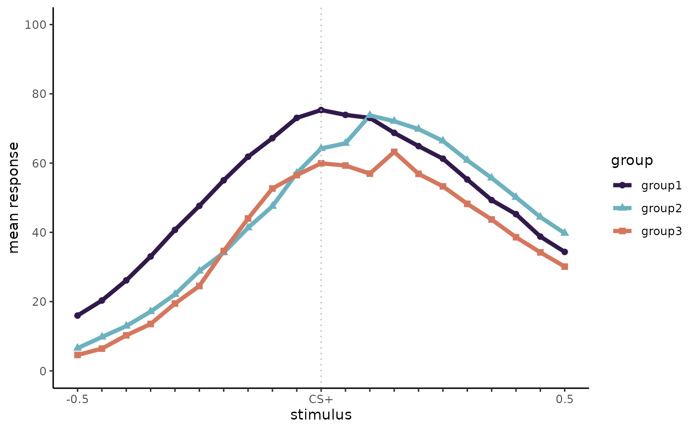

augGauss
augGauss.RmdInstallation
‘augGauss’ is under active development, you can install the development version of ‘augGauss’ from GitHub with:
Getting started
We will be using some example data to demonstrate the main functions
of augGauss
demo_data |> print(n = 6)
#> # A tibble: 630 × 4
#> subj group x y
#> <dbl> <chr> <dbl> <dbl>
#> 1 1 group1 -0.5 5.06
#> 2 1 group1 -0.45 6.74
#> 3 1 group1 -0.4 10.2
#> 4 1 group1 -0.35 11.5
#> 5 1 group1 -0.3 18.8
#> 6 1 group1 -0.25 28.8
#> # ℹ 624 more rows
?demo_dataSimulate gradients from raw data
sim_data <- simulate_data(nSubj = 10, nGroups = 3)
sim_data |> print(n = 6)
#> # A tibble: 630 × 4
#> subj group x y
#> <dbl> <chr> <dbl> <dbl>
#> 1 1 group1 -0.5 0
#> 2 1 group1 -0.45 0
#> 3 1 group1 -0.4 0
#> 4 1 group1 -0.35 0
#> 5 1 group1 -0.3 0.666
#> 6 1 group1 -0.25 0.307
#> # ℹ 624 more rowsYou can save the simulated data by setting the save_data
argument to TRUE
sim_data <- simulate_data(nSubj = 10, nGroups = 3, save_data = TRUE)Plot the simulated gradients
plot_simulated_data(sim_data)
transformed_data <- sim_data |> transform_data()
combined <- aug_fit_model(transformed_data = transformed_data, iter = 100, chains = 2)
#> Warning: There were 41 divergent transitions after warmup. See
#> https://mc-stan.org/misc/warnings.html#divergent-transitions-after-warmup
#> to find out why this is a problem and how to eliminate them.
#> Warning: There were 57 transitions after warmup that exceeded the maximum treedepth. Increase max_treedepth above 10. See
#> https://mc-stan.org/misc/warnings.html#maximum-treedepth-exceeded
#> Warning: Examine the pairs() plot to diagnose sampling problems
#> Warning: The largest R-hat is 1.86, indicating chains have not mixed.
#> Running the chains for more iterations may help. See
#> https://mc-stan.org/misc/warnings.html#r-hat
#> Warning: Bulk Effective Samples Size (ESS) is too low, indicating posterior means and medians may be unreliable.
#> Running the chains for more iterations may help. See
#> https://mc-stan.org/misc/warnings.html#bulk-ess
#> Warning: Tail Effective Samples Size (ESS) is too low, indicating posterior variances and tail quantiles may be unreliable.
#> Running the chains for more iterations may help. See
#> https://mc-stan.org/misc/warnings.html#tail-ess
#> Warning:
#> 21 (10.0%) p_waic estimates greater than 0.4. We recommend trying loo instead.
#> Warning: Relative effective sample sizes ('r_eff' argument) not specified.
#> For models fit with MCMC, the reported PSIS effective sample sizes and
#> MCSE estimates will be over-optimistic.
#> Warning: Some Pareto k diagnostic values are too high. See help('pareto-k-diagnostic') for details.
#> Warning: There were 84 divergent transitions after warmup. See
#> https://mc-stan.org/misc/warnings.html#divergent-transitions-after-warmup
#> to find out why this is a problem and how to eliminate them.
#> Warning: There were 16 transitions after warmup that exceeded the maximum treedepth. Increase max_treedepth above 10. See
#> https://mc-stan.org/misc/warnings.html#maximum-treedepth-exceeded
#> Warning: There were 1 chains where the estimated Bayesian Fraction of Missing Information was low. See
#> https://mc-stan.org/misc/warnings.html#bfmi-low
#> Warning: Examine the pairs() plot to diagnose sampling problems
#> Warning: The largest R-hat is 2.89, indicating chains have not mixed.
#> Running the chains for more iterations may help. See
#> https://mc-stan.org/misc/warnings.html#r-hat
#> Warning: Bulk Effective Samples Size (ESS) is too low, indicating posterior means and medians may be unreliable.
#> Running the chains for more iterations may help. See
#> https://mc-stan.org/misc/warnings.html#bulk-ess
#> Warning: Tail Effective Samples Size (ESS) is too low, indicating posterior variances and tail quantiles may be unreliable.
#> Running the chains for more iterations may help. See
#> https://mc-stan.org/misc/warnings.html#tail-ess
#> Warning:
#> 8 (3.8%) p_waic estimates greater than 0.4. We recommend trying loo instead.
#> Warning: Relative effective sample sizes ('r_eff' argument) not specified.
#> For models fit with MCMC, the reported PSIS effective sample sizes and
#> MCSE estimates will be over-optimistic.
#> Warning: Some Pareto k diagnostic values are too high. See help('pareto-k-diagnostic') for details.
#> Warning: There were 35 divergent transitions after warmup. See
#> https://mc-stan.org/misc/warnings.html#divergent-transitions-after-warmup
#> to find out why this is a problem and how to eliminate them.
#> Warning: There were 64 transitions after warmup that exceeded the maximum treedepth. Increase max_treedepth above 10. See
#> https://mc-stan.org/misc/warnings.html#maximum-treedepth-exceeded
#> Warning: There were 1 chains where the estimated Bayesian Fraction of Missing Information was low. See
#> https://mc-stan.org/misc/warnings.html#bfmi-low
#> Warning: Examine the pairs() plot to diagnose sampling problems
#> Warning: The largest R-hat is 2.98, indicating chains have not mixed.
#> Running the chains for more iterations may help. See
#> https://mc-stan.org/misc/warnings.html#r-hat
#> Warning: Bulk Effective Samples Size (ESS) is too low, indicating posterior means and medians may be unreliable.
#> Running the chains for more iterations may help. See
#> https://mc-stan.org/misc/warnings.html#bulk-ess
#> Warning: Tail Effective Samples Size (ESS) is too low, indicating posterior variances and tail quantiles may be unreliable.
#> Running the chains for more iterations may help. See
#> https://mc-stan.org/misc/warnings.html#tail-ess
#> Warning:
#> 137 (65.2%) p_waic estimates greater than 0.4. We recommend trying loo instead.
#> Warning: Relative effective sample sizes ('r_eff' argument) not specified.
#> For models fit with MCMC, the reported PSIS effective sample sizes and
#> MCSE estimates will be over-optimistic.
#> Warning: Some Pareto k diagnostic values are too high. See help('pareto-k-diagnostic') for details.Highest posterior densities
Get_HDIs(combined)
#> $group1
#> param hdi_lim hdi_low hdi_high rope_low rope_high prop_rope
#> 1 M_group 0.95 -0.07972567 0.02263214 -0.05 0.05 0.69
#> 2 SDPlus_group 0.95 0.35647637 0.48862122 0.10 0.20 0.00
#> 3 SDMinus_group 0.95 0.18379105 0.30837820 0.10 0.20 0.08
#> 4 height_group 0.95 78.01489699 80.53459971 70.00 80.00 0.83
#> p_dir
#> 1 0.87
#> 2 1.00
#> 3 1.00
#> 4 1.00
#>
#> $group2
#> param hdi_lim hdi_low hdi_high rope_low rope_high prop_rope
#> 1 M_group 0.95 -0.01803819 0.08725932 -0.05 0.05 0.65
#> 2 SDPlus_group 0.95 0.32584384 0.47964028 0.10 0.20 0.00
#> 3 SDMinus_group 0.95 0.16317274 0.27274444 0.10 0.20 0.34
#> 4 height_group 0.95 72.87775313 76.44804082 70.00 80.00 1.00
#> p_dir
#> 1 0.92
#> 2 1.00
#> 3 1.00
#> 4 1.00
#>
#> $group3
#> param hdi_lim hdi_low hdi_high rope_low rope_high prop_rope
#> 1 M_group 0.95 -0.02489726 0.08943035 -0.05 0.05 0.63
#> 2 SDPlus_group 0.95 0.21438490 0.38489904 0.10 0.20 0.01
#> 3 SDMinus_group 0.95 0.13771309 0.25616297 0.10 0.20 0.55
#> 4 height_group 0.95 48.43213075 71.11747827 70.00 80.00 0.17
#> p_dir
#> 1 0.9
#> 2 1.0
#> 3 1.0
#> 4 1.0
Get_HDIs_diff(combined, comparison = c("group1", "group3"))
#> $group_sample_diffs
#> M_group SDPlus_group SDMinus_group height_group
#> 1 -0.05901866 0.122295527 0.073445340 29.805420
#> 2 -0.04915773 0.225503001 -0.030513387 29.066228
#> 3 -0.13320636 0.168518073 0.057305701 29.561811
#> 4 -0.03570876 0.128782251 0.039109735 26.959945
#> 5 -0.04361061 0.188688876 0.087636833 25.871340
#> 6 -0.06453702 0.103792596 0.069787709 29.303856
#> 7 -0.06853530 0.122596448 0.037644043 26.684695
#> 8 -0.05945458 0.152877915 0.017018861 25.555337
#> 9 -0.10367678 0.243897055 0.001849441 26.743888
#> 10 -0.16749744 0.125639390 0.026002958 30.660208
#> 11 -0.07102394 0.165522893 -0.070048043 28.816812
#> 12 -0.06560339 0.144099028 -0.072371913 24.976842
#> 13 -0.06412555 0.109462501 0.030570305 27.631998
#> 14 -0.13559286 0.166963309 0.112358876 27.801650
#> 15 -0.02308173 0.124327337 0.080263037 29.402927
#> 16 -0.06215152 0.166179551 0.130759530 28.896318
#> 17 -0.08225343 0.070814097 0.034363733 29.669094
#> 18 -0.10047864 0.114120180 -0.021978379 27.595793
#> 19 -0.14381497 0.193959429 0.065934788 27.052674
#> 20 -0.05801530 0.064373864 0.078949579 30.680740
#> 21 -0.03337687 0.121632648 0.046109494 27.713020
#> 22 -0.02237132 0.116509021 0.016881832 27.169486
#> 23 -0.01069699 0.044687887 0.083846579 27.219485
#> 24 -0.08273321 0.138454847 0.033579977 28.890252
#> 25 -0.05299794 0.055387268 0.100376385 29.452803
#> 26 -0.02104444 0.169867605 0.065410294 29.890555
#> 27 -0.01202156 0.153600405 0.012955170 26.883457
#> 28 -0.14381621 0.154276584 0.071954954 28.141785
#> 29 -0.13715070 0.168221780 0.093567721 26.291194
#> 30 -0.05588099 0.073362670 0.033834100 29.820666
#> 31 -0.12142402 0.066179648 0.049777831 30.678771
#> 32 -0.03298621 0.019918122 0.046912548 27.488173
#> 33 -0.07753213 0.088024317 0.102824957 29.750020
#> 34 -0.01034750 0.149588804 0.093973462 28.994907
#> 35 -0.13169457 0.227269461 -0.022363296 29.634288
#> 36 -0.05077972 0.063514224 0.072441168 28.016010
#> 37 -0.01711634 0.158215959 0.110729265 28.488554
#> 38 -0.04084090 0.087794616 0.068139388 31.924549
#> 39 -0.12219830 0.100144504 0.007708378 30.581999
#> 40 -0.03734472 0.183467914 0.006049445 25.600852
#> 41 -0.12296117 0.087922223 0.129776564 29.132906
#> 42 -0.10879230 0.248764928 0.068292938 27.134017
#> 43 -0.06774144 0.124297600 -0.020539875 29.146094
#> 44 -0.07968252 0.124912752 -0.014282366 29.018478
#> 45 -0.16436775 0.111991939 0.070359917 31.186980
#> 46 -0.11361134 0.130540631 -0.008508974 26.324742
#> 47 -0.08566495 0.142311863 0.123826369 29.425527
#> 48 -0.07692512 0.110377847 0.108011366 28.841260
#> 49 -0.09463015 0.242701349 0.003711353 29.075604
#> 50 -0.04700810 0.042178458 0.133851256 31.334642
#> 51 -0.15262331 0.111260030 0.082907924 8.419636
#> 52 -0.11041253 0.132432967 0.090963161 9.017005
#> 53 -0.08625804 0.118408919 0.063478321 11.776279
#> 54 -0.05258450 -0.003980769 0.035546366 11.450367
#> 55 -0.01934918 0.119565387 -0.060472160 8.126301
#> 56 -0.09779133 0.114022081 -0.007246397 8.556576
#> 57 -0.06952985 0.126005719 0.091419259 9.623541
#> 58 -0.05154476 0.012875867 0.085829680 11.305421
#> 59 -0.13907353 0.064998923 0.082380229 10.825834
#> 60 -0.06344315 0.119626812 -0.026795909 10.687574
#> 61 -0.08267377 0.090137777 0.136416823 10.067855
#> 62 -0.11253087 0.222429147 0.125747281 11.379271
#> 63 -0.06074152 0.007925219 0.089984004 8.683102
#> 64 -0.06956585 0.064510124 -0.021168179 7.794068
#> 65 -0.10312571 0.031301840 0.050249623 10.937641
#> 66 -0.05851258 -0.014767571 -0.033242187 8.294245
#> 67 -0.04740977 0.095174498 -0.009698077 9.562321
#> 68 -0.08903626 0.070725447 0.021893345 10.966433
#> 69 -0.07827749 0.048806849 0.116522504 7.813999
#> 70 -0.03094882 -0.049968296 -0.030796561 10.715459
#> 71 -0.02784083 0.012047206 0.054811644 7.554432
#> 72 -0.02994565 0.116157790 0.062827779 9.365519
#> 73 -0.12392382 0.079094620 0.023772493 9.502851
#> 74 -0.08404709 0.150449571 0.033262213 11.511375
#> 75 -0.07470195 0.073095795 0.063508462 14.660431
#> 76 -0.14579423 0.119672089 0.054474586 8.587665
#> 77 -0.06355475 0.095937862 0.062823392 13.913661
#> 78 -0.04112743 0.064927770 -0.079235513 9.756664
#> 79 -0.03493215 0.087246850 -0.069209278 10.073455
#> 80 -0.07966652 0.131016644 0.060981607 16.931947
#> 81 -0.06819165 0.171625120 0.088067906 10.102510
#> 82 -0.08603574 0.084503878 0.042495088 10.715402
#> 83 -0.07629210 0.102019912 0.056643143 10.454184
#> 84 -0.06579455 0.139715751 -0.010655373 9.480722
#> 85 -0.06496711 0.022277586 0.096590874 8.505207
#> 86 -0.06375809 0.068033240 0.038425345 9.173471
#> 87 -0.09581431 0.076300636 0.109379763 8.885449
#> 88 -0.05933855 0.156939019 0.087885531 9.725392
#> 89 -0.08410514 0.103450445 0.002178780 11.428068
#> 90 -0.05391466 0.132022787 0.091033988 11.244271
#> 91 -0.04554624 0.057579658 0.093345992 12.949587
#> 92 -0.08597298 0.008669315 0.038318303 10.535722
#> 93 -0.04184243 0.158937303 0.040481842 11.020289
#> 94 -0.09096260 0.085124458 0.034948747 8.735534
#> 95 -0.01619995 0.076716706 0.065190668 9.359031
#> 96 -0.06369105 0.125245721 0.037294687 9.718881
#> 97 -0.11828764 0.074488421 0.093914385 11.662310
#> 98 -0.03226671 0.103528704 0.005693238 8.872145
#> 99 -0.14096154 0.096292962 0.060792991 8.179504
#> 100 -0.08078163 0.177927662 0.161734441 10.730456
#>
#> $group_diff_hdi
#> param hdi_lim hdi_low hdi_high p_dir rope_low rope_high
#> 1 M_group 0.95 -0.143816213 -0.0103475 1.00 -0.05 0.05
#> 2 SDPlus_group 0.95 0.007925219 0.2438971 0.97 -0.05 0.05
#> 3 SDMinus_group 0.95 -0.072371913 0.1307595 0.82 -0.05 0.05
#> 4 height_group 0.95 7.794068238 30.6807396 1.00 -2.50 2.50
#> prop_rope
#> 1 0.26
#> 2 0.13
#> 3 0.42
#> 4 0.00Posterior predictions
Plot_Posterior_Preds_by_group(combined, "group3", include_preds = TRUE)
#> Warning: Removed 2404 rows containing missing values (`geom_point()`).